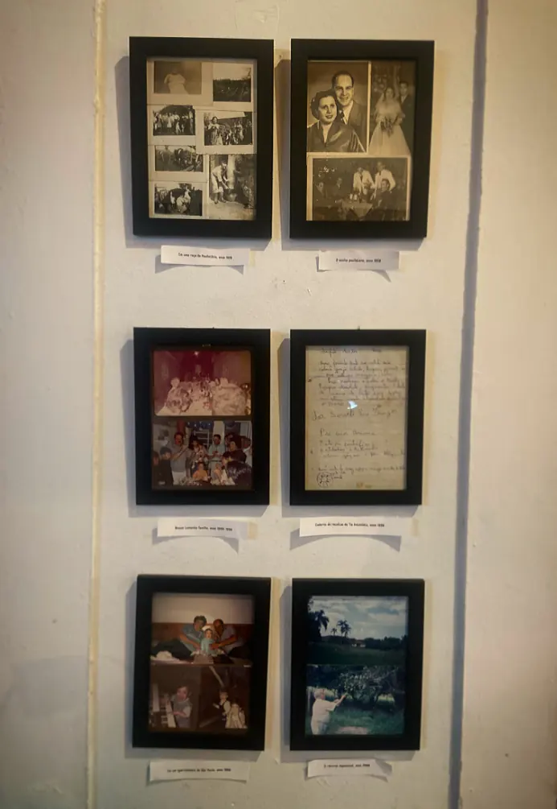

Antes do restaurante, veio o Tio Dinho
Antes do restaurante, veio o Tio Dinho.
Tio Dinho era o avô do chef Thiago Basile.
Nascido no interior, chegou a São Paulo nos anos 1950, quando a industrialização da cidade ganhava velocidade. Levou consigo um repertório de sabores, modos de fazer, relações com a terra e formas de enxergar o mundo que, naquele momento, começavam a ser associados a um Brasil que precisava ficar para trás.
Como tantos que fizeram esse caminho, aprendeu também a olhar para a própria origem pelos olhos da cidade. O que antes era simplesmente sua cultura passou a carregar a marca do atraso.
Mas algumas coisas permaneceram.
No fim da vida, aquele menino caipira ainda estava lá. Tio Dinho falava em voltar para sua terra. A idade já tornava esse retorno difícil, mas o desejo dizia alguma coisa sobre tudo aquilo que havia ficado pelo caminho.
O caminho inverso
Thiago nasceu em São Paulo nos anos 1980 e cresceu em uma cidade já profundamente industrializada. Sua geração acompanhou outra transformação: a comida cada vez mais distante da terra, a expansão dos ultraprocessados e a aceleração da vida cotidiana.
Décadas depois, fez o movimento inverso ao do avô e foi procurar o interior.
Esse caminho não leva de volta ao mundo que Tio Dinho deixou nos anos 1950. Aquele mundo já não existe. O interior também se transformou, e Campinas carrega muitas das contradições sociais e ambientais do nosso tempo.
Também não faria sentido abrir mão do conhecimento construído desde então. Ciência, técnica, pesquisa e as trocas entre diferentes culturas ampliaram enormemente aquilo que sabemos sobre alimentos, agricultura e cozinha.
O que nos interessa é colocar esses conhecimentos em conversa com outros que aprendemos a chamar de antigos.
Tio Dinho
O restaurante nasce nesse encontro entre dois movimentos.
De um lado, um homem que saiu do interior em direção à cidade moderna e, durante esse percurso, aprendeu que parte de sua cultura deveria ser deixada para trás.
Do outro, um neto nascido nessa modernidade que começa a procurar justamente aquilo que ela havia desprezado.
Entre os dois existe quase um século de história.
Nesse período, aprendemos muito. Também produzimos cidades poluídas, sistemas alimentares cada vez mais dependentes da indústria, perda de biodiversidade e uma relação com o tempo, a terra e a comida que hoje cobra seu preço.
Por isso, reavivar um passado interessa quando ele nos ajuda a imaginar outros caminhos.
Na cozinha do Tio Dinho, ingredientes, técnicas, memórias e modos de fazer do interior encontram pesquisa, conhecimento contemporâneo e referências trazidas de outros lugares.
O passado chega à cozinha como matéria para criar o futuro.
Uma casa em Sousas
Anos depois, essa história encontrou lugar em Sousas. O Tio Dinho nasceu no espaço compartilhado com o Atauê & Livres, que acolheu a ideia do restaurante e abriu espaço para que ela pudesse ganhar forma.
Essa convivência continua fazendo parte do nosso cotidiano. Restaurante e quitanda dividem o mesmo endereço e uma proximidade que também chega à cozinha, especialmente pelo contato com ingredientes agroecológicos e com quem os produz.

Thiago Villela Basile
Chef de cozinha e proprietário do Tio Dinho, idealizador da Paulistânia Desvairada e coordenador e pesquisador do Grupo de Estudos Os Sentidos Como Alimento — GEOSCA, registrado no CNPq.
É autor de À Mesa — Texto Teatral, Ensaio e Receitas para um Teatro de Comer, publicado pela Caravana Grupo Editorial em 2026.
É Doutor em Letras pela USP e Mestre em Teoria e História Literária pela UNICAMP. Na gastronomia, possui especialização em Gestão de Negócios em Gastronomia pela Universidade Anhembi Morumbi e formação em culinária pela Scuola Girassole, em Modena, Itália.